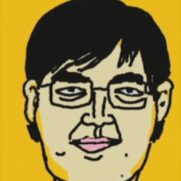
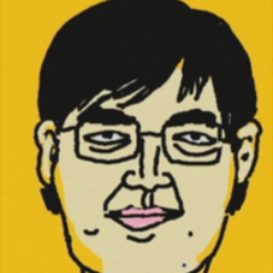

게임 개발자 경력 때문인진 몰라도 대작 게임을 진행하거나
신기술이 도입된 게임을 할 때 세세한 부분까지 느끼고 즐기면서 플레이한다.
특히 VR 부분에서 이런 성향이 강한데, 하프라이프: 알릭스 플레이 중
대부분의 스트리머가 놓치는 부분까지 발견해가며 시청자들과 함께 감탄했다.
때문에 이런 타입의 게임은 똘똘똘이가 가장 알차게 즐긴다고 하는 평이 많다.
사실 그 전에 서울-부산도 스트라이다로 제패해서 관련 커뮤니티에선 어느 정도 알려져 있었다. 당시 KTX 편도 요금 미만으로 식대 및 숙박비를 사용했다.
이 때 "'삼각김밥' 타고 다니다 쳐맞을 확률에 대한 고찰"이라는 말도 유행시켰다.
이후 홍콩섬도 스트라이다 여행으로 제패함으로써 전토는 아니지만 한중일 3국을 자전거로 다녀본 셈이다.